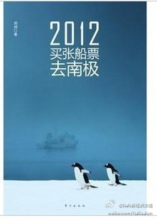

话题很吸引人啊，去看看。[呵呵]//@Italk新经济沙龙:2012，买张船票一起去南极，相信梦想的力量 ！SMGitalk大师特别节目，6月20日18:45，欢迎一起来关注参与！@Ada李力 @小宇哥王宇 @ghosTM55 @雷闯 @98bob @Gina-Li@iTalk沙龙:#italk112期活动预告#《2012，买张船票去南极》将旅行、梦想浑然“编程”，微软中国战略合作总监，浙江大学软件学院系主任@刘润 将为大家主讲《2012，买张船票去南极》。分享南极之行的难忘经历以及本书成功运作的商业模式，6月20日张江地铁站传奇广场三楼@IC咖啡 18:45，请报名:网页链接 